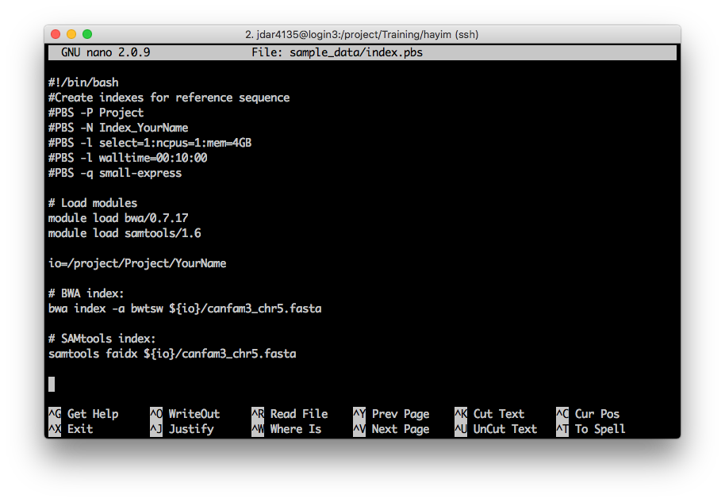
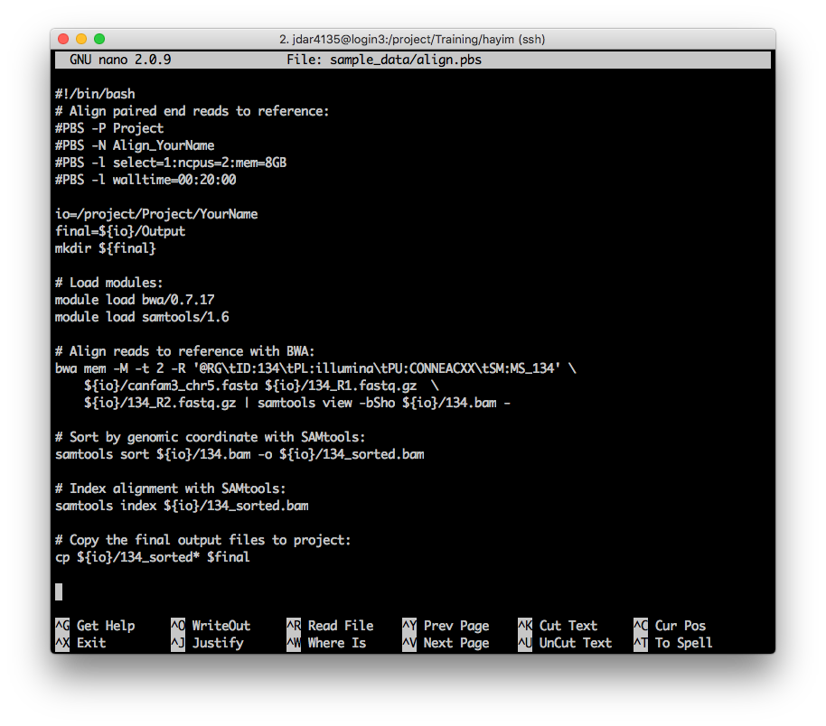

Bonus: Bioinformatics Case Study
Questions
- What other use cases are ther for HPC?
- Can you run any software?
Objectives
- Run a Bioinformatics case study example
CASE STUDY - BIOINFORMATICS PIPELINE
Index a genome
Open index.pbs and make any edits necessary. What will you need to change?
nano index.pbs
When you’re done, save the script (on nano Ctrl+o), and exit (on nano Ctrl+x).
Submit the job as before, with qsub:
qsub index.pbs[jdar4135@login3 hayim]$ qsub index.pbs
2557043.pbsserverThis time I’m going to check on the job using qstat -wTu jdar4135 to show my jobs, in wide format, with a start time estimate – it’s a little wide for this broswer window!
[jdar4135@login3 hayim]$ qstat -wTu jdar4135
pbsserver:
Est
Req'd Req'd Start
Job ID Username Queue Jobname SessID NDS TSK Memory Time S Time
------------------------------ --------------- --------------- --------------- -------- ---- ----- ------ ----- - -----
2557043.pbsserver jdar4135 small-express Index_hayim 49847 1 1 4gb 00:10 R --When your job finishes (how will you know?) have a look at any log files produced. What is one way to check if there were any errors?
Answer
Search for Exit Status messages with grep:
grep -se "Exit Status" *[jdar4135@login3 hayim]$ grep -se "Exit Status" *
Index_hayim.o2557008_usage:Exit Status: 0
Index_hayim.o2557043_usage:Exit Status: 0Both of my jobs have Exit Status 0 – perfect.
Have a look at your error file anyway. What do you notice?
Answer
Not every message to stderr is an actual error! Blame the program authors for this…
Finally, have a look at the resource usage for this job
[jdar4135@login3 hayim]$ cat Index_hayim.o2557043_usage
-- Job Summary -------------------------------------------------------
Job Id: 2557043.pbsserver for user jdar4135 in queue small-express
Job Name: Index_hayim
Project: RDS-CORE-Training-RW
Exit Status: 0
Job run as chunks (hpc056:ncpus=1:mem=4194304kb)
Walltime requested: 00:02:00 : Walltime used: 00:00:41
: walltime percent: 34.2%
-- Nodes Summary -----------------------------------------------------
-- node hpc056 summary
Cpus requested: 1 : Cpus Used: unknown
Cpu Time: unknown : Cpu percent: unknown
Mem requested: 1.0GB : Mem used: unknown
: Mem percent: unknown
-- WARNINGS ----------------------------------------------------------
** Low Walltime utilisation. While this may be normal, it may help to check the
** following:
** Did the job parameters specify more walltime than necessary? Requesting
** lower walltime could help your job to start sooner.
** Did your analysis complete as expected or did it crash before completing?
** Did the application run more quickly than it should have? Is this analysis
** the one you intended to run?
**
-- End of Job Summary ------------------------------------------------This job still did not run long enough for the system to properly estimate CPU or RAM usage.
Align a genome
Last one. Open align.pbs and make any edits necessary. What will you need to change?
nano align.pbs
Change #1
- Specify your project.
- Use the
-PPBS directive to specify the Training project, using its short name.
<details>
<summary>Solution</summary>
```sh
#PBS -P TrainingChange #2
- Give your job a name
- Use the
-NPBS directive to give your job an easily identifiable name. You might run lots of jobs at the same time, so you want to be able to keep track of them!
Solution
#PBS -N Align_hayimSubstitute a job name of your choice!
Change #3
Tailor your resource requests.
Use the
-lPBS directive to request appropriate compute resources and wall-time for your job.This script performs an ‘alignment’ of DNA reads against a reference genome. 10 minutes should be plenty, and we won’t use more than 1 GB RAM.
Notice here that we are requesting 2 CPUs. Are we sure our programs can use them?
Solution
#PBS -l select=1:ncpus=2:mem=8GB
#PBS -l walltime=00:10:00Challenge 4
- Specify a job queue.
- Use the
-qPBS directive to send the job to the defaultQ queue. You can also try small-express if you like; whose jobs start sooner?
Solution
#PBS -q defaultQChallenge N5
Set the working directory for this job. Either just cd to it, or set up a Bash variable to use within the script.
# Edit the line beginning ```io=```
io=/project/Training/hayimSolution
This is my solution
All materials copyright Sydney Informatics Hub, University of Sydney